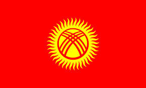

Flag and Emblem
The flag was approved on March 3, 1992 by a resolution of the Supreme Council of the Republic of Kyrgyzstan. Authors: E. Aidarbekov, B. Zhaichybekov, S. Iptarov, Zh. Mataev, M. Sydykov. The national flag of the Kyrgyz Republic is a red rectangular panel, in the center of which there is an image of a round solar disk with evenly divergent rays of golden color (forty (Kyrgyz) rays), with an image of a red tyundyuk of a Kyrgyz yurt placed inside the solar disk. The width of the flag is three-fifths of its length. The diameter of the radiant disc is three-fifths of the flag's width. The ratio of the diameters of the solar and radiant disks is three to five. The diameter of the tyundyuk is half the diameter of the radiant disk.

State Emblem of the Kyrgyz Republic The coat of arms was approved by the resolution of the Jogorku Kenesh of the Kyrgyz Republic dated January 14, 1994. Authors: A. Abdraev and S. Dubanaev. The State Emblem of the Kyrgyz Republic is an image of a white falcon with outstretched wings, placed in the center of a blue circle in a white frame, and in the background the lake of the spurs of the Ala-Too mountains and the rising sun with golden rays, placed on both sides of the cotton stalks and wheat ears , with the inscription "Kyrgyz" located at the top of the circle, and the inscription "Republicas" located at the bottom of the circle